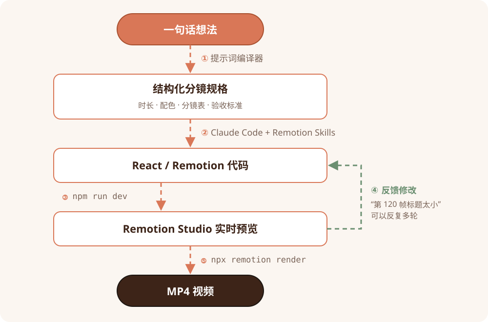

06 · 实战：用 Claude + Remotion 做动画¶
这一章用一个完整的例子，演示如何只靠“说话”做出一段动画视频：先用 提示词编译器（Prompt Compiler） 把一句模糊的想法扩写成详细的分镜规格，再交给 Claude Code 在 Remotion 项目里写代码、预览、渲染。
1. 先理解三件事¶
| 角色 | 是什么 | 在流程中负责 |
|---|---|---|
| Remotion | 用 React 写视频的开源框架。每一帧都是一个 React 组件的渲染结果，最终导出为 MP4 | 把代码变成视频 |
| Claude Code | 在项目中读写代码、执行命令的 AI 助手 | 根据规格写 Remotion 代码、修改、调试 |
| 提示词编译器 | 一段“生成提示词的提示词”（prompt of prompts） | 把“做个酷炫的开场动画”这种一句话想法，编译成时长、分镜、配色、动画参数都写清楚的规格说明 |
为什么要多一层“编译”？因为直接对 Claude 说“做个好看的动画”，它只能猜：多长、什么风格、几个场景、文字是什么。猜错了就要来回返工。先把想法编译成一份结构化的规格，相当于先出分镜脚本再开拍，一次成功率高得多，后续修改也有据可依。

2. 准备工作¶
- 已按 03 章 安装好 Claude Code（桌面应用的 Code 标签页或命令行版均可）；
- 安装 Node.js LTS 版本，终端执行
node -v能看到版本号； - 终端已按 02 章 配置代理：
npx下载依赖、Remotion 首次渲染时下载浏览器内核，都需要网络。
Note
Remotion 的许可证：个人、3 人及以下的团队、非营利组织以及评估试用可以免费使用（含商用）；4 人及以上的公司需要购买公司授权。详见 Remotion 许可说明。
3. 创建 Remotion 项目¶
以下命令来自 Remotion 官方的 Claude Code 指引：
# 1. 创建一个空白项目
npx create-video --yes --blank my-video
cd my-video
# 2. 安装 Remotion 官方的 Agent Skills（让 Claude 掌握 Remotion 的最佳实践）
npx remotion skills add
# 3. 启动预览（Remotion Studio）
npm run dev
浏览器会打开 Remotion Studio（通常是 http://localhost:3000）。保持它运行，另开一个终端启动 Claude：
使用桌面应用的话，在 Code 标签页中选择 my-video 文件夹即可。
4. 第一步：安装提示词编译器¶
我们把提示词编译器做成一个 Claude Code skill，以后在任何视频项目里输入 /video-prompt-compiler 你的想法 就能调用。（skill 的原理见 进阶 · Skills。）
在 my-video 项目中新建文件 .claude/skills/video-prompt-compiler/SKILL.md，内容如下：
---
name: video-prompt-compiler
description: 把一句话的视频想法编译成可直接交给 Claude Code 执行的 Remotion 分镜规格。用户想做动画、视频、片头，或者输入 /video-prompt-compiler 时使用。
---
你是一名动画导演兼 Remotion 工程师。你的任务不是写代码，而是把用户的想法“编译”成一份完整、无歧义的视频规格说明，供下一步写代码使用。
用户的想法：$ARGUMENTS
## 编译步骤
1. 如果想法缺少关键信息（用途、时长、画幅、文案），先用一次提问补齐，最多 3 个问题；用户说“你决定”则自行给出合理默认值。
2. 按下面的模板输出规格，所有数值必须具体，不允许出现“适当”“酷炫一点”这类模糊词。
## 输出模板
### 基本参数
- 分辨率与画幅：（例如 1920×1080，16:9）
- 帧率：30 fps
- 总时长：X 秒 = Y 帧
- Composition ID：（英文驼峰，例如 BrandIntro）
### 视觉风格
- 背景色、主色、强调色：给出 HEX 色值
- 字体：中文使用 Noto Sans SC（通过 @remotion/google-fonts 加载），英文字体单独指定
- 整体气质：用 3 个形容词描述，并给出 1 个参考（例如“Apple 发布会式极简”）
### 分镜表
| 场景 | 帧范围 | 画面内容 | 动画（入场 / 停留 / 出场） | 文案 |
| --- | --- | --- | --- | --- |
（每个场景一行，帧范围首尾相接、无空隙；动画写明使用 spring 还是 interpolate、起止数值和缓动方式）
### 技术约束
- 所有动画必须由 useCurrentFrame() 驱动，使用 interpolate() 或 spring()；禁止使用 CSS transition / animation
- 场景用 <Sequence> 或 <Series> 组织，每个场景拆成独立组件文件
- 素材只使用代码绘制的图形、SVG 或 public/ 目录下的文件，不引用外部网络图片
- 在 src/Root.tsx 中注册 Composition
### 验收标准
- 列出 3–5 条可在 Remotion Studio 中逐帧检查的标准（例如“第 45 帧标题完全不透明且居中”）
最后一行输出：「规格已就绪，回复“开始制作”即可按此规格编写代码。」
保存后，在 Claude 中输入 / 应能看到 video-prompt-compiler。
Tip
不想建文件也可以：把上面 --- 之后的正文复制下来，把 $ARGUMENTS 换成你的想法，直接发给 Claude（甚至在 claude.ai 网页版里发也行），得到规格后再粘贴给 Claude Code。
5. 第二步：编译你的想法¶
在 Claude 中输入：
编译器会输出类似这样的规格（节选）：
### 基本参数
- 1920×1080，16:9；30 fps；总时长 10 秒 = 300 帧；Composition ID：ClaudeDiyIntro
### 视觉风格
- 背景 #1A1410，主色 #D97757，强调色 #F4B183，文字 #F5EDE6
- 中文 Noto Sans SC 800 字重；英文 JetBrains Mono
### 分镜表
| 场景 | 帧范围 | 画面内容 | 动画 | 文案 |
| 1 | 0–89 | 12 条射线组成的星芒 | spring 缩放 0→1（damping 12），同时旋转 0→180° | 无 |
| 2 | 90–209 | 星芒左移，右侧出现标题 | 星芒 x 由 0 interpolate 到 -420；标题逐字出现，每字间隔 3 帧 | ClaudeDIY |
| 3 | 210–299 | 副标题与底部光晕 | 副标题 opacity 0→1、y 20→0（20 帧）；最后 15 帧整体淡出 | Claude Code 自学指南 |
检查一遍规格：时长、文案、配色哪里不满意，直接让它改规格，而不是等代码写完再改。
6. 第三步：让 Claude Code 制作¶
规格确认后回复：
因为已经安装了 Remotion Skills，Claude 会按 Remotion 的最佳实践编写组件、在 src/Root.tsx 中注册 Composition。完成后切到 Remotion Studio，在左侧选择 ClaudeDiyIntro，拖动时间轴即可逐帧检查。
Tip
改动较大时，可以先按 Shift + Tab 进入 Plan 模式，让 Claude 先说明要创建哪些文件、每个场景怎么实现，确认后再动手。
7. 第四步：迭代修改¶
反馈越具体，修改越准确。推荐的说法：
| 不推荐 | 推荐 |
|---|---|
| 动画不太好看 | 场景 1 的星芒弹得太厉害，把 spring 的 damping 从 12 调到 20 |
| 字太小了 | 第 150 帧时标题字号改为 120px，副标题改为 48px |
| 节奏慢 | 把场景 2 缩短到 90 帧，后续场景整体前移 |
| 换个颜色 | 主色改为 #C96442，同步更新所有引用该颜色的组件 |
也可以把 Studio 的截图直接拖给 Claude，说明“第 X 帧这里有问题”。每次只改一个场景，确认后再改下一个，可以避免越改越乱。
8. 第五步：渲染导出¶
命令行渲染（ClaudeDiyIntro 换成你的 Composition ID）：
界面渲染：在 Remotion Studio 中点击 Render 按钮 → 选择参数 → 点击 Render video。
首次渲染会自动下载无头浏览器内核，需要终端代理正常工作。
9. 常见问题¶
| 现象 | 原因与解决 |
|---|---|
| 预览正常，渲染出的视频动画缺失或闪烁 | 使用了 CSS transition / animation。要求 Claude 改为 useCurrentFrame() + interpolate() 驱动 |
| 中文显示为方块或字体不对 | 让 Claude 使用 @remotion/google-fonts 加载 Noto Sans SC，并在渲染前等待字体加载完成 |
npx 卡住或渲染时下载失败 |
终端未走代理，按 02 章 配置后重开终端 |
| Claude 写的代码与 Remotion 新版本 API 不符 | 确认已执行 npx remotion skills add；也可以让 Claude 先阅读 Remotion 文档 再修改 |
| 想做竖屏短视频 | 在编译想法时写明“1080×1920 竖屏”，编译器会据此生成规格 |
10. 延伸：把编译器用在别处¶
“先编译提示词、再执行”的思路并不局限于视频。任何需求模糊、返工成本高的任务都适用：网页设计、数据报表、PPT 大纲、长文写作。做法相同：写一个 skill，规定它“只产出规格、不直接执行”，并给出带具体数值的输出模板和验收标准。
留言板
全站所有页面共用这一个留言板，欢迎在这里提问、分享经验、指出错误。登录 GitHub 即可留言，请勿贴出公网 IP、订阅链接或证件信息。